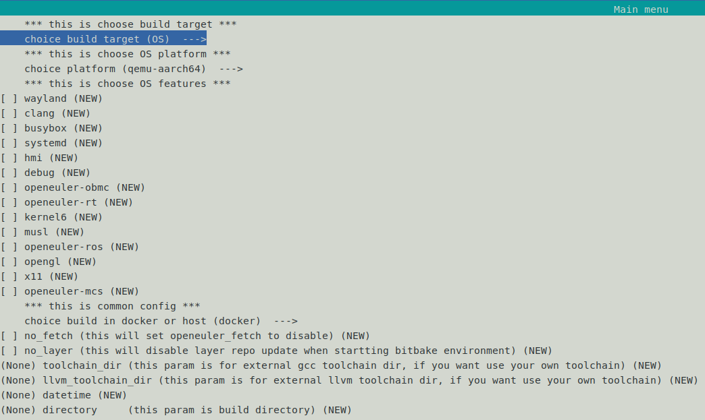

嵌入式分区虚拟机Jailhouse¶
总体介绍¶
Jailhouse 是一种轻量级嵌入式分区虚拟机，与传统的全功能虚拟化解决方案（如 KVM 和 Xen）不同，它不提供完整的虚拟机管理和抽象功能， 而是一种基于Linux的静态分区虚拟化方案。Jailhouse 不支持任何设备模拟，不同客户虚拟机之间也不共享任何 CPU，所以也没有调度器。
Jailhouse 的工作是将硬件资源进行静态分区，每个分区称为一个 cell，每个 cell 之间是相互隔离开的，并且拥有自己的硬件资源(CPU、内存、外设等)， 运行在 cell 内的裸机应用程序或操作系统称为 inmate。 Jailhouse 的第一个 cell 叫 Root Cell，这是一个特权Cell，内部运行的是一个 Linux 系统，依赖该 Linux 接管系统硬件资源，以及进行硬件的初始化和启动。 除了 Root Cell 的其它 cell 统一称为 Non-root Cell，从 Root Cell 中获取系统资源，可独占或与 Root Cell 共享。
Jailhouse 构建指导¶
方法一：使用 oebuild 构建¶
openEuler Embedded 目前支持在 qemu-arm64 和 RPI4 上运行 Jailhouse，默认集成到了 openeuler-image-mcs 镜像，构建方法可参考 mcs镜像构建指导。
请注意，需要修改 oebuild 的编译配置文件 compile.yaml，把 MCS_FEATURES 中的 openamp 改成 jailhouse。
方法二：使用 MCS 镜像的 SDK 构建¶
按照 mcs镜像构建指导 构建出 MCS 镜像的SDK后，可以使用 SDK 交叉编译 Jailhouse，提升开发效率。步骤如下：
准备 Jailhouse 源码：
# 下载 Jailhouse 源码： $ git clone https://gitee.com/src-openeuler/Jailhouse.git $ cd Jailhouse; tar -xzf jailhouse-0.12.tar.gz # 打入 openEuler Embedded 的增强补丁： $ curl -OL https://gitee.com/openeuler/yocto-meta-openeuler/raw/master/meta-openeuler/recipes-mcs/jailhouse/files/0001-driver-Add-support-for-remote-proc.patch $ cd jailhouse-0.12; patch -p1 < ../0001-driver-Add-support-for-remote-proc.patch执行以上步骤后，代码目录为：jailhouse-0.12，即我们的构建目录。
安装MCS镜像的SDK：
$ sh openeuler-glibc-x86_64-openeuler-image-mcs-aarch64-qemu-aarch64-toolchain-*.sh openEuler Embedded(openEuler Embedded Reference Distro) SDK installer version * =================================================================================== Enter target directory for SDK (default: /opt/openeuler/oecore-x86_64): ./sdk You are about to install the SDK to "/usr1/openeuler/sdk". Proceed [Y/n]? y Extracting SDK...................done Setting it up...SDK has been successfully set up and is ready to be used. Each time you wish to use the SDK in a new shell session, you need to source the environment setup script e.g. $ . /usr1/openeuler/sdk/environment-setup-aarch64-openeuler-linux若 SDK 安装失败，请参考 安装SDK 章节，排查是否缺少依赖软件包。
完成 SDK 安装后，按照提示，在 jailhouse-0.12 目录下，执行：
$ . /usr1/openeuler/sdk/environment-setup-aarch64-openeuler-linux # 需要自定义新增的cell文件，可以直接放在 configs/${ARCH} 目录中，然后执行编译： $ make KDIR=${KERNEL_SRC} -j$(nproc)编译完成后，构建产物如下：
cell文件：configs/${ARCH} 目录下；
Jailhouse 固件 jailhouse.bin ：在 hypervisor 目录下，需要拷贝到单板的 /lib/firmware 目录；
Jailhouse 驱动 jailhouse.ko ：在 driver 目录下；
用户态工具 jailhouse ：在 tools 目录。
Jailhouse 使用指导¶
Jailhouse 构建完成后，生成文件分为三部分：
Jailhouse 驱动和固件:
jailhouse.ko, jailhouse.bin，提供用户态接口并初始化 hypervisor；cell 和 guest 镜像：cell是镜像运行所需的系统资源的描述；guest镜像运行在cell内，包括裸机，RTOS等；
用户态工具
jailhouse：负责加载cell，运行镜像，查看运行状态等。openeuler-image-mcs 镜像中安装了可用的 cell 和 inmates-demo，下面以
qemu-arm64为例，介绍 Jailhouse 的使用。
启动 QEMU
qemu-system-aarch64 -machine virt,gic-version=3,virtualization=on,its=off \ -cpu cortex-a57 -nographic -smp 4 -m 2G \ -append "console=ttyAMA0 loglevel=8 mem=1G" \ -kernel zImage \ -initrd openeuler-image-mcs-qemu-aarch64-*.rootfs.cpio.gz初始化 Root Cell
jailhouse enable /usr/share/jailhouse/cells/qemu-arm64-openeuler-demo.cell初始化 Non-root Cell
jailhouse cell create /usr/share/jailhouse/cells/qemu-arm64-inmate-demo.cell加载 inmate
jailhouse cell load 1 /usr/share/jailhouse/inmates/uart-demo.bin jailhouse cell start 1之后可以看到 uart-demo 的打印：
Started cell "inmate-demo" ======= 0x0Hello 1 from cell! Hello 2 from cell! Hello 3 from cell! Hello 4 from cell! Hello 5 from cell! Hello 6 from cell! Hello 7 from cell! ... ...
在树莓派上使用 Jailhouse 进行多OS混合部署¶
openEuler Embedded 支持在树莓派上通过 Jailhouse 实现 openEuler Embedded + openEuler Embedded + zephyr (1 core + 2 cores + 1 core) 的混合部署。具体步骤如下：
构建多OS混合部署镜像
根据 mcs镜像构建指导，使用 oebuild 初始化编译环境。
# 构建支持嵌入式图形的混合部署镜像。注意，该镜像构建任务数量多，耗时较长。 $ oebuild rpi4_jailhouse_hmi_img.yaml $ cd rpi4_jailhouse_hmi_img $ oebuild bitbake $ bitbake openeuler-image # 或者，构建只覆盖基础软件包的裁剪镜像 $ oebuild rpi4_jailhouse_tiny_img.yaml $ cd rpi4_jailhouse_tiny_img $ oebuild bitbake $ bitbake openeuler-image构建完成后，在
output目录下可以看到镜像，如：$ tree output/ output/ └── 20240624030106 ├── Image ├── openeuler-image-mcs-raspberrypi4-64-20240624030106.rootfs.cpio.gz ├── openeuler-image-raspberrypi4-64-20240624030106.rootfs.rpi-sdimg └── vmlinux启动镜像
将
openeuler-image-raspberrypi4-64-*.rootfs.rpi-sdimg烧录到树莓派的SD卡上，并按照 openeuler-image-uefi启动使用指导 进行镜像启动。Note
对于树莓派的多OS混合部署镜像，Root Cell 上运行的 openEuler Embedded 作为管理 VM，仅用于实现 VM 的管理，因此使用 initrd 启动，不会挂载 SD 卡的 ROOT 分区。实际上，混合部署镜像将绝大部分的树莓派硬件设备（包括SD卡，USB，GPU等）分配给了 Non-root Cell，Root Cell 只使用 UART1(GPIO 14, 15)和以太网端口。因此，镜像启动后，只能通过串口或 ssh 到默认的 IP 地址：192.168.10.8 进行登录。# 通过 SSH 登录 $ ssh root@192.168.10.8 # 初始化 Root Cell $ jailhouse enable /usr/share/jailhouse/cells/rpi4.cell # 启动 Non-root Cell (zephyr) $ mica create rpi4-zephyr-ivshmem.conf $ mica start rpi4-zephyr-ivshmem # 之后，可以通过打开 Root Cell 的 tty 设备来访问 zephyr 的 shell $ screen /dev/ttyRPMSG0 # 启动 Non-root Cell (openEuler Embedded) $ jailhouse cell linux /usr/share/jailhouse/cells/rpi4-linux.cell /boot/Image \ -d /usr/share/jailhouse/cells/dts/inmate-rpi4.dtb \ -c "console=ttyAMA1,115200 root=/dev/mmcblk0p2 rootfstype=ext4 rootwait \ coherent_pool=1M 8250.nr_uarts=1 snd_bcm2835.enable_compat_alsa=0 snd_bcm2835.enable_hdmi=1 \ bcm2708_fb.fbwidth=1920 bcm2708_fb.fbheight=1080 bcm2708_fb.fbswap=1 \ vc_mem.mem_base=0x3ec00000 vc_mem.mem_size=0x40000000 dwc_otg.lpm_enable=0 cma=96M" # 加载成功后，能够在 UART2(GPIO 0, 1) 上看到 Non-root 的启动日志，并且能够通过 hdmi 进行登录 # 若使用的是支持嵌入式图形的混合部署镜像，可以使用 wayfire 桌面 $ wayfire
使用 Jailhouse 运行 FreeRTOS¶
目前仅支持在 qemu-arm64 上通过 Jailhouse 运行 FreeRTOS。
添加 FreeRTOS 的构建
根据 mcs镜像构建指导，使用 oebuild 初始化编译环境。
# qemu-arm64 oebuild generate -p qemu-aarch64 -f openeuler-mcs -d <build_arm64_mcs>除了使用上述命令进行配置文件生成之外，还可以使用如下命令进入到菜单选择界面进行对应数据填写和选择，此菜单选项可以替代上述命令中的oebuild generate，选择保存之后继续执行上述命令中的bitbake及后续命令即可。
oebuild generate具体界面如下图所示:

进入
<build>目录，添加meta-freertos# BBLAYERS 中添加 meta-freertos vi conf/bblayers.conf BBLAYERS ?= " \ ... ... /usr1/openeuler/src/yocto-poky/../yocto-meta-openeuler/rtos/meta-freertos \ "构建 jailhouse-freertos
oebuild bitbake jailhouse-freertos加载 FreeRTOS
构建完成后，oebuild 构建目录下可以获取
FreeRTOS.bin，放到 qemu 上通过 Jailhouse 加载运行：# 获取 FreeRTOS.bin find . -name FreeRTOS.bin # 放到 qemu 上，通过 Jailhouse 加载运行 jailhouse cell load 1 FreeRTOS.bin jailhouse cell start 1